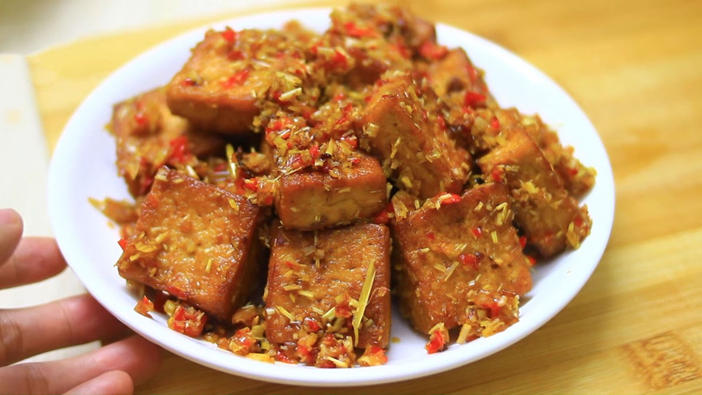

Home Page
Lemongrass Chili Tofu - Dau Hu Xao Sa Ot

Ingredients
- 1 block of silken/medium tofu
- 3 cloves garlic, minced
- 3 medium shallots, minced
- 2 stalks lemongrass, cleaned and chopped (or 1/2 cup frozen lemongrass)
- 3 red chili, minced
- 3 tablespoons cornstach
- 4 cups vegetable oil for deep fry
- 2 tablespoons vegetable oil
- 1 tablespoon sugar
- 1 tablespoon vegan fish sauce
- 1 teaspoon soy sauce
- 1 teaspoon vegetable bouillon powder
- 2 teaspoons Pink Himalayan salt (or Kosher salt)
Directions
- Prep the tofu block by draining out the packing water. Press the remaining water out of the tofu block,then slice the tofu block into several pieces.
- Heat 4 cups of vegetable oil in a deep frying pan. Deep fry the tofu pieces at 350 F until golden. Set aside on paper towels
to get rid of excessive oil.
- Mix 1 tablespoon sugar, 1 tablespoon vegan fish sauce, 1 teaspoon soy sauce, and 1 teaspoon vegetable bouillon powder in a
bowl until homogeneous. Then coat evenly on the tofu pieces.
- On another skillet, heat the 2 tablespoons vegetable oil and add all of the garlic, shallots, lemongrass, and q`red chilli.
Stir fry until golden.
- Add the marinated fried tofu into the stir fried mix. Add 2 teaspoons of pink (or Kosher) salt. Stir fry until the tofu is
evenly coated. Enjoy!